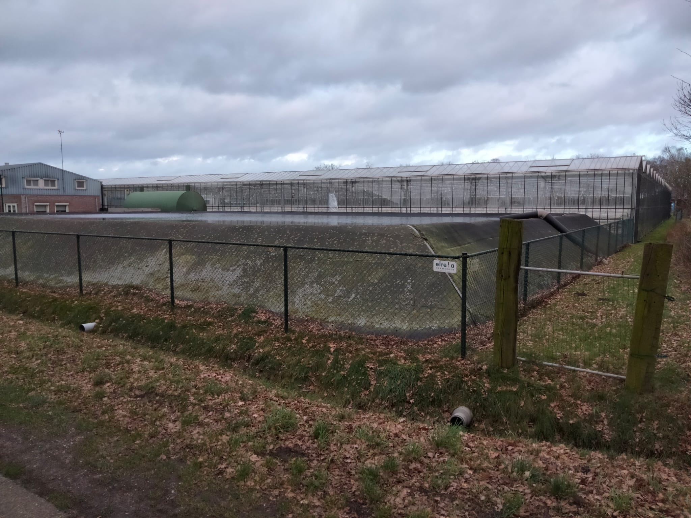

Ons verhaal
Van tuinbouwkas naar moderne caravanstalling. Ontdek hoe De Bunders zich door de jaren heen heeft ontwikkeld tot de ruime en veilige stallingslocatie die het vandaag is.
De tijd van de tuinbouwkas
Waar tegenwoordig caravans, campers en andere voertuigen worden gestald, groeiden vroeger dagelijks verse gewassen.
De kas werd jarenlang gebruikt voor de teelt van komkommers en tomaten. Later werd de focus verlegd naar de aardbeienteelt. Dankzij de grote oppervlakte vormde deze kas jarenlang een belangrijke plek voor de tuinbouw.


Van kas naar stallingsruimte
Na de tuinbouwperiode ontstond het idee om de locatie een nieuwe bestemming te geven.
Het glas en de installaties werden verwijderd terwijl de sterke staalconstructie behouden bleef. Vervolgens werd het gebouw volledig dichtgemaakt met plaatmateriaal waardoor een ruime, droge en veilige opslagruimte ontstond.
Moderne caravanstalling
Inmiddels is De Bunders uitgegroeid tot een professionele caravanstalling met plaats voor meer dan 150 voertuigen.
De stalling wordt omringd door de rustige natuur van Venhorst en biedt een veilige plek voor caravans, campers, boten, auto's, vouwwagens en aanhangers.
Met camerabewaking, ruime openingstijden en een centrale ligging in Noord-Brabant vormt De Bunders vandaag de dag een betrouwbare keuze voor vele klanten uit de regio.